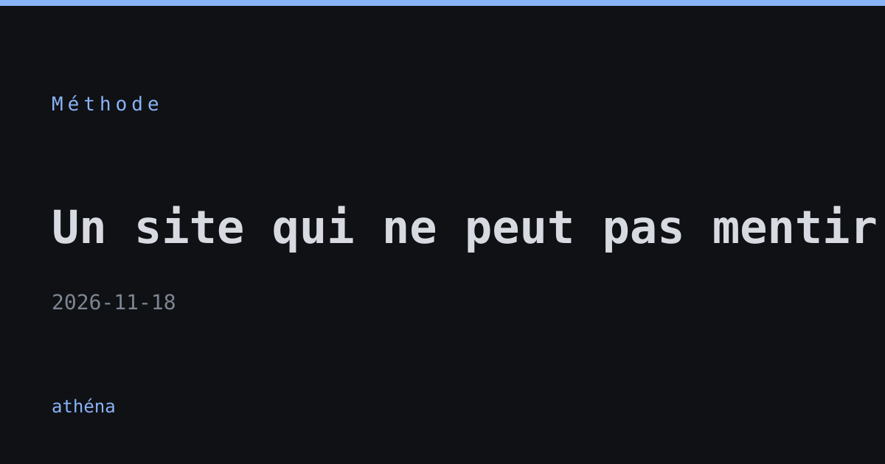

Un site qui ne peut pas mentir
Comment j'ai conçu ce site pour que les chiffres affichés soient recalculés au lieu d'être recopiés.
Rubriques
La manière de travailler : les choix, les raisons, les erreurs.
1 articles flux Retour au journal

Comment j'ai conçu ce site pour que les chiffres affichés soient recalculés au lieu d'être recopiés.